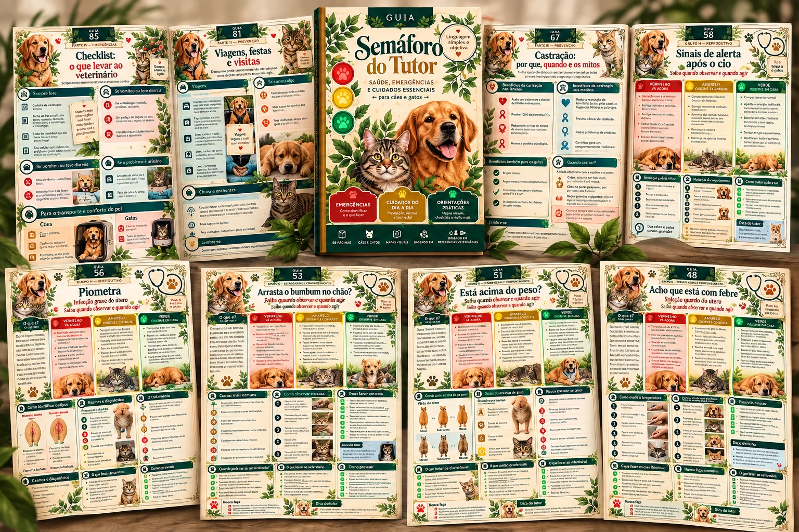
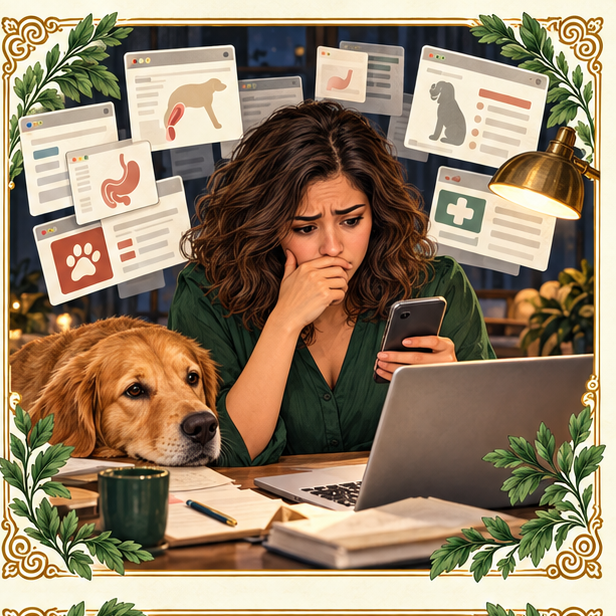
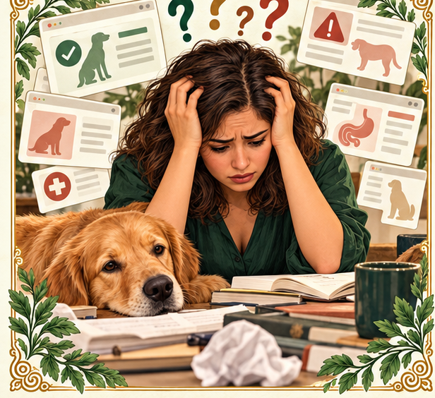
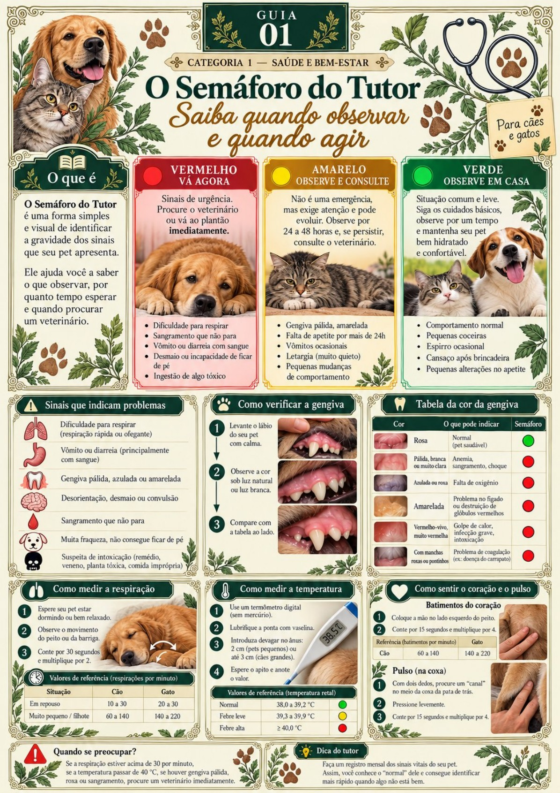
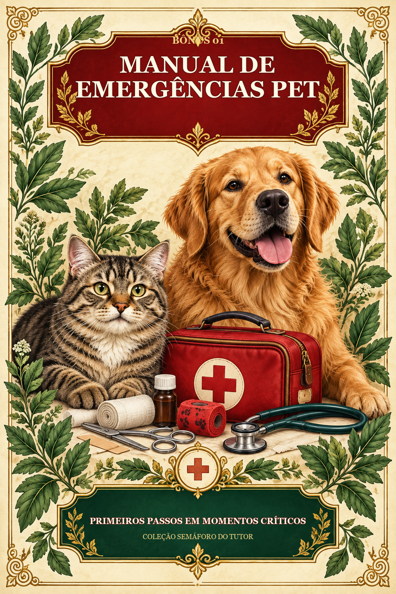
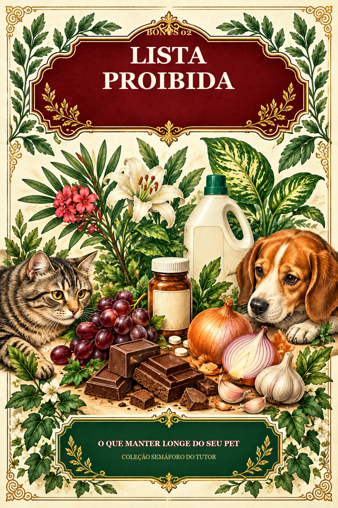
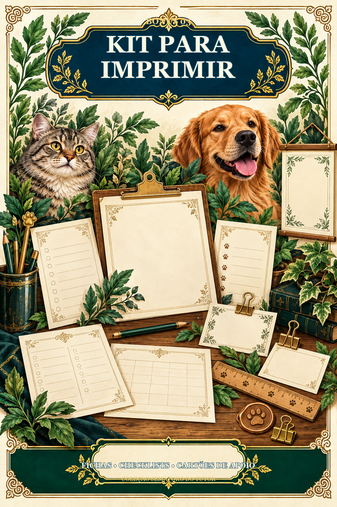
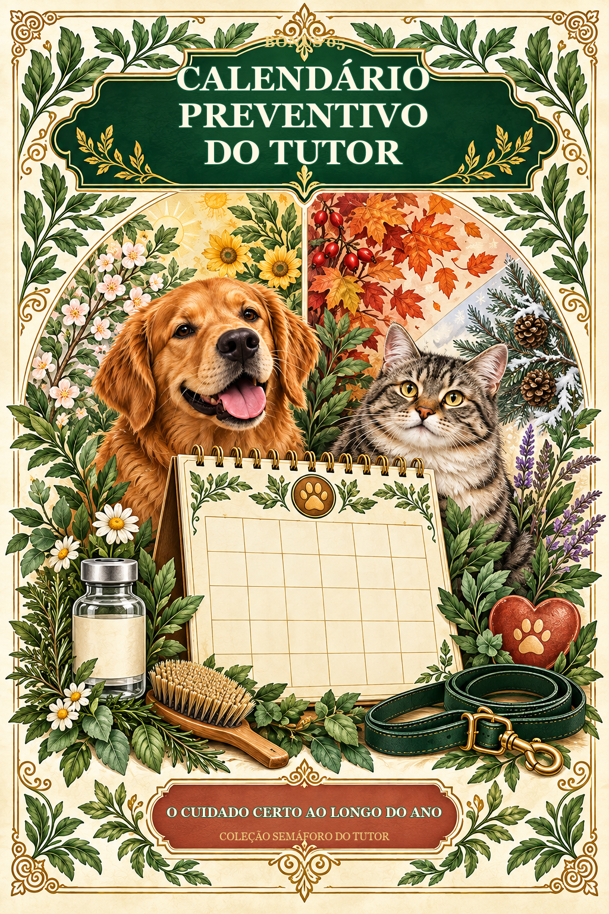
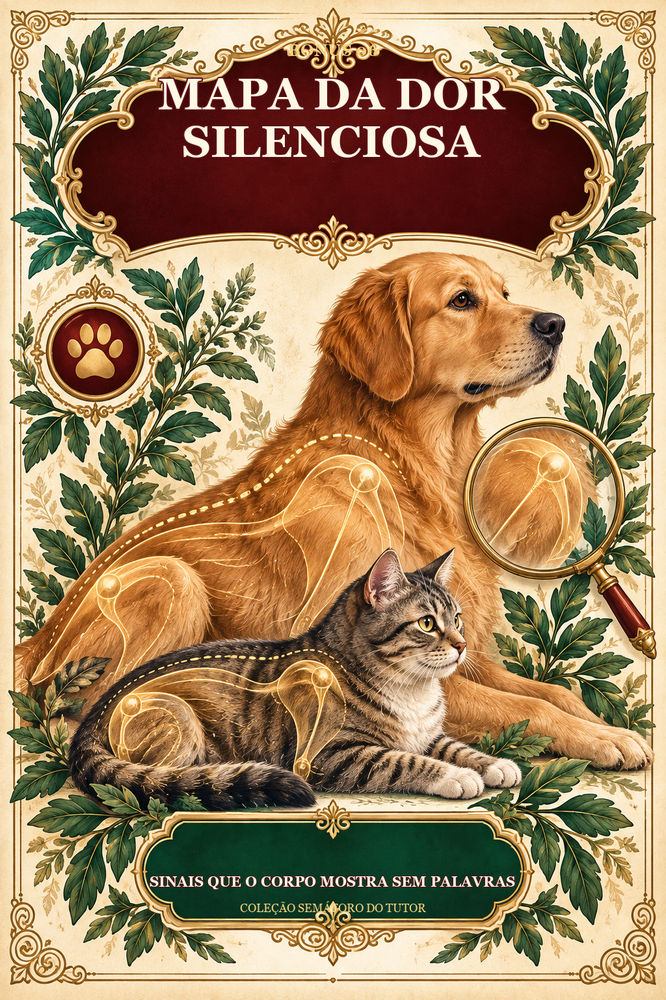

01
Você percebe seu pet estranho
Ele fica quieto, muda a postura ou perde o interesse pelo que normalmente gosta.
O Guia Semáforo do Tutor transforma sinais confusos em uma decisão visual simples: observar em casa, acompanhar por 24–48 horas ou procurar atendimento imediatamente.
Quero o pacote completo por R$ 37Acesso digital • Para cães e gatos • Consulta rápida

Pesquisar sintomas mostra possibilidades. Mas não deixa claro se você deve observar, acompanhar ou agir agora.
Ele fica quieto, muda a postura ou perde o interesse pelo que normalmente gosta.

O Google devolve doenças graves, relatos soltos e dezenas de possibilidades diferentes.

Você não sabe se espera, se acompanha por algumas horas ou se precisa correr.
Sem um critério de urgência, você pode pagar caro e ainda sair sem entender se precisava agir naquele momento.
O guia organiza cada sinal em três níveis de atenção. Assim, a dúvida vira uma decisão visual simples e rápida.
O sinal é leve ou comum. Continue observando e mantenha os cuidados em casa.
Acompanhe de perto. Se não houver mudança ou melhora em 24–48 horas, procure o veterinário.
É um sinal de emergência. Procure atendimento veterinário imediatamente.
Esse é o diferencial: transformar informação em uma orientação visual que o tutor consegue consultar em poucos segundos.
Quando algo muda no comportamento ou no corpo do pet, é comum cair em dois extremos: entrar em pânico ou esperar demais. Informação solta na internet costuma aumentar a confusão.
O Semáforo do Tutor organiza o que observar e indica o nível de atenção, sem transformar o tutor em veterinário.
Respiração, apetite, gengiva, temperatura, comportamento e outros pontos de atenção.
Compara o que observou com orientações claras e organizadas.
Observar, acompanhar por 24–48 horas ou buscar atendimento imediatamente.

As informações são apresentadas em mapas visuais, passos numerados, tabelas comparativas e referências rápidas. Você não precisa ler um capítulo inteiro para localizar a orientação necessária.
Sem páginas genéricas de apresentação: estas imagens foram retiradas do material que você recebe.
1 de 5
Arraste para o lado, use as setas ou clique em uma página para ampliar.
Encontre o sinal e identifique o nível de atenção sem atravessar textos longos.
Veja a diferença entre observar, acompanhar e procurar atendimento imediato.
Mantenha um material de consulta visual sempre à mão para cães e gatos.
Reduza decisões por impulso com um caminho visual simples e responsável.
Uma biblioteca visual para emergências, prevenção, rotina e as fases mais delicadas da vida do seu bichinho.

Primeiros passos organizados para momentos críticos enquanto você busca atendimento.

Alimentos, plantas, medicamentos e itens que precisam ficar longe de cães e gatos.

Fichas, cartões e checklists para deixar informações importantes sempre visíveis.
Um guia de conforto, adaptação e qualidade de vida para a fase sênior.

Uma visão anual dos cuidados que ajudam a manter a rotina preventiva em dia.

Posturas e mudanças discretas que podem indicar desconforto e merecem atenção.
Os três primeiros bônus já possuem conteúdo final. Os três novos entram na composição comercial e terão seus materiais internos finalizados antes da entrega.
Dois caminhos simples. Sem assinatura.
Para ter o mecanismo do semáforo sempre à mão.
Uma biblioteca visual para decidir, prevenir e cuidar em cada fase.
Você leva 7 materiais por apenas R$ 20 a mais.
Os botões de compra estão prontos para receber os links do checkout.
Sim. O material reúne orientações visuais para tutores de cães e gatos.
Não. Ele ajuda a organizar a observação e entender o nível de atenção, mas não realiza diagnóstico e não substitui atendimento veterinário.
Verde significa manter a observação; amarelo significa acompanhar e procurar o veterinário se não houver mudança ou melhora em 24–48 horas; vermelho indica emergência e necessidade de atendimento imediato.
Sim. Por ser digital, o guia pode ser aberto em celular, tablet ou computador compatível com PDF.
Na opção de R$ 17 você recebe somente o Guia Semáforo do Tutor. Na opção de R$ 37 você recebe o guia e os seis bônus apresentados nesta página.
Manual de Emergências Pet, Lista Proibida e Kit para Imprimir já possuem conteúdo final. Manual da Velhice, Calendário Preventivo e Mapa da Dor Silenciosa estão em produção e serão finalizados antes da entrega do pacote.
Após a confirmação do pagamento, o acesso digital será enviado pelo canal configurado na plataforma de checkout.
Procure atendimento veterinário imediatamente. Não espere o sintoma passar e não use o guia para tentar tratar uma emergência em casa.